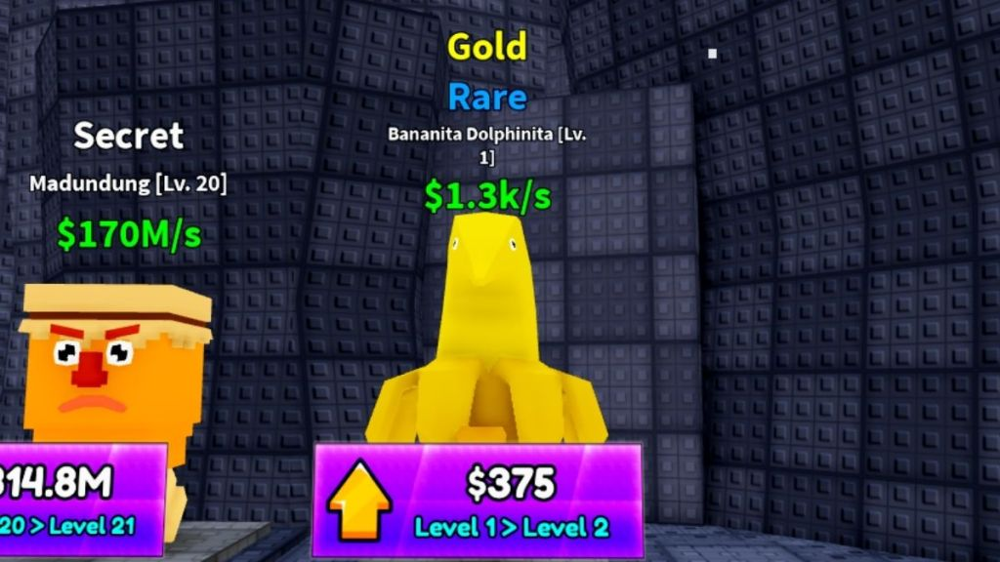
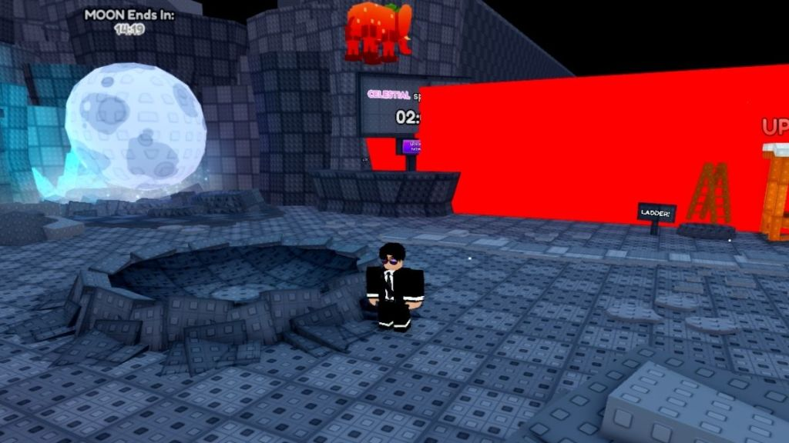

רפרנס חזותי: Survive LAVA for Brainrots
נבדק בתאריך 22/10/2026. שני צילומים נפתחו ונבדקו; לא נערך משחק ישיר.
למה נבחר
Survive LAVA for Brainrots, של Johnny Lava. תיאור היוצר מציג איסוף תחת איום לבה עולה ובסיס עם התקדמות. זו השוואה קרובה לאיסוף וחזרה תחת מגבלת זמן. קפיצה, גובה, אירועים והכנסה מהדמויות הם הבדלים מהמשחק שלנו.
נתוני שימוש וזהות
נתוני Roblox הציבוריים החזירו 713 שחקנים בו־זמנית ו־753,496,335 ביקורים מצטברים. מזהה universe: 9649298941. זו מדידה רגעית מ־22/10/2026; היא אינה ממוצע, הוכחת הכנסה או דירוג בקטגוריה. זמן קובץ התגובה ב־UTC: 2026-10-22T13:10:41.418740+00:00. נבחרה זהות זו במפורש כדי להימנע מערבוב עם משחקי Lava בעלי שמות דומים.
צבע ותוויות

תצפית: דמות צהובה מול קיר כהה, שם נדירות בצבע אחר, ערך ירוק וכפתור שדרוג סגול. האותיות גדולות ביחס לדמויות. התמונה קרובה וחתוכה; אין בה HUD מלא או דרך חזרה.
משמעות עבורנו: הערך והדרגה צריכים להיות נפרדים וברורים. צבע אינו מספיק לבדו. אין כאן הוכחה שכל התוויות קריאות במסך נייד.
מקור: Beebom — Mutations guide, Bipradeep Biswas, עודכן ב־20/02/2026. הקרדיט מציין צילום של הכותב מתוך המשחק.
סביבה ומצלמה בזמן אירוע

תצפית: דמות קטנה יחסית למרחב, משטחים מדורגים, ירח בהיר, timer ומשטח אדום רווי. הפרטים הגאומטריים חוזרים על עצמם. הצילום הוא בזמן אירוע Moon, ולא עדות לתאורה הרגילה.
משמעות עבורנו: צריך להשוות גם את היחס בין הדמות לסביבה ואת יכולת זיהוי המסלול. לא מאמצים את החושך או את האירוע; V1 שלנו מגדיר תאורה קבועה.
מקור: Beebom — Moon event guide, אותו כותב ותאריך עדכון. שתי הכתבות הן מקור חזותי של אותו מפרסם, ולא שני מקורות צילום עצמאיים.
מגבלות ושמירה
תאריך הצילום וגרסת המשחק אינם ידועים. לא נבדקו אנימציה, קצב, הנאה, קול או ביצועים. התמונות והמקורות נשמרו תחת references/competitors/survive-lava-for-brainrots עם manifest ונתוני מקור; התיקייה נכללת כעת ב־Git באישור אדם מתאריך 26/10/2026. החומר אינו assets למשחק.